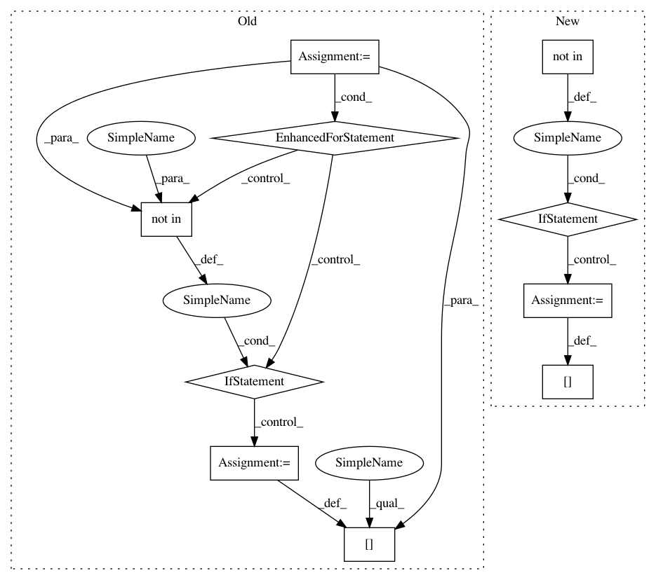

fde7cc023ea226bf01563d0cbce919e85f8701fd,model.py,,_last,#Any#Any#,190
Before Change
t = T_tot
while len(last) < graph.number_of_nodes():
next_ind = [] // layers at prev time point
for ind in curr_ind:
if ind not in last:
last[ind] = t
// then add adjacency list onto next_ind
next_ind.extend(graph.predecessors(ind))
curr_ind = next_ind
t -= 1
return last
After Change
while len(curr_layers) > 0:
next_layers = [] // layers at prev time point
for layer in curr_layers:
if "last" not in graph.node[layer]:
graph.node[layer]["last"] = t
// then add adjacency list onto next_layer
next_layers.extend(graph.predecessors(layer))
curr_layers = next_layers
t -= 1
In pattern: SUPERPATTERN
Frequency: 3
Non-data size: 10
Instances
Project Name: neuroailab/tnn
Commit Name: fde7cc023ea226bf01563d0cbce919e85f8701fd
Time: 2016-10-02
Author: qbilius@gmail.com
File Name: model.py
Class Name:
Method Name: _last
Project Name: snorkel-team/snorkel
Commit Name: 21678f424e8a7b0734e2dcc31d0a2ee2e10af097
Time: 2016-09-04
Author: ajratner@gmail.com
File Name: snorkel/annotations.py
Class Name: AnnotationManager
Method Name: load
Project Name: dpressel/mead-baseline
Commit Name: 4edc5dd05bb737dcba543b12c8943ffbae6c9c92
Time: 2018-09-26
Author: blester125@users.noreply.github.com
File Name: python/mead/tasks.py
Class Name: Task
Method Name: _configure_reporting